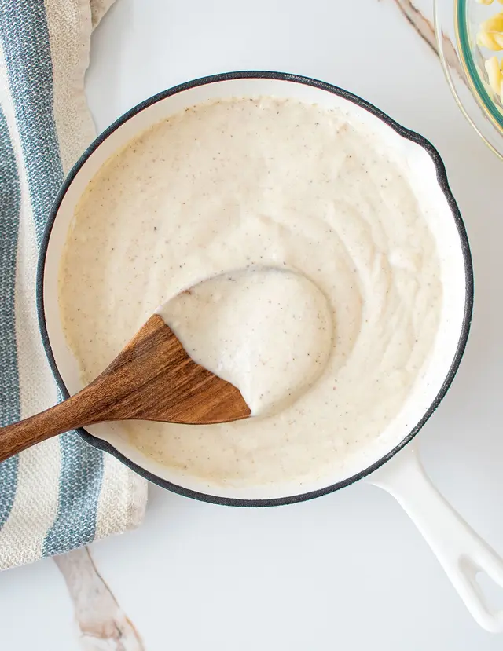

Home
White Sauce

Every home cook needs a good béchamel in their repertoire – our step-by-step guide to this pasta sauce will teach you how to make a roux and keep your sauce lump-free
Ingredients
- 500ml whole milk
- 1 onion halved
- 1 bay leaf
- 2 cloves
- 50g butter
- 50g plain flour
Method
- Bring the milk to the boil in a small saucepan with the onion, bay leaf and cloves. Turn off the heat and leave to infuse for 20 minutes
- Melt the butter in another saucepan, then add the plain flour. Stir continuously until a paste forms - this is called a roux. Continue cooking for 2 minutes.
- Remove the onion, bay, and cloves from the milk and discard. Add the now infused milk to the roux gradually, strirring as you go, until you get a smooth sauce. Cook for 5-10 minutes, stirring continuously, until the sauce has thickened. Season to taste.
Lasagne
Lemon Garlic Pasta
Arrabbiata